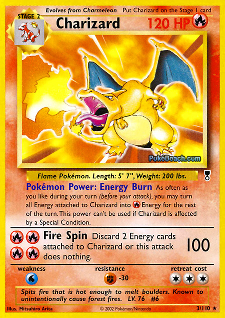
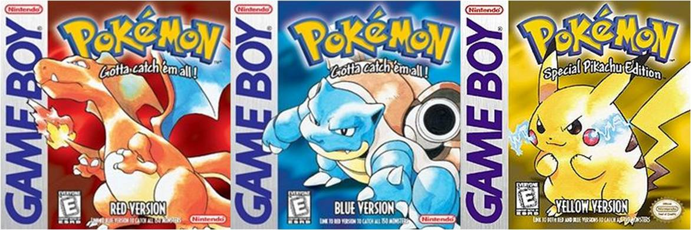

Pokemon initially was released on February 27, 1996 in Japanese. At first it had a moderate amount of sales. Soon, as players progressed in their in-game journey's , players discovered that 20 lucky people had an opportunity to receive a legendary pokemon called "Mew". Over 78,000 people entered the contest, and as a result, sales in the game skyrocekted. On October 20, 1lj96, the Pokemon Trading Card Game was released and became an instant hit. It included over 102 cards. On April 1, 1997, an anime series was released. The main character's name was Satoshi, and in english, the main character's name was (and still is) Ash Ketchum. On September 28, 1998, an english version of pokemon video games was released.
As pokemon grew in popularity so did demand. Pokemon Red and Pokemon Blue were released on February 7th, 1996 in Japan, and was released on September 30th in North America. The games were about a boy who embarks on a journey to become a pokemon master, travelling all over the "Kanto Region", a fictional land on Pokemon. The slogan was "Gotta Catch 'em All!" Fast forward a couple of years, on September 12th, 1998, Pokemon Yellow was released in Japan' and on October 25th 1999 in North America. This game allowed players to become Ash Ketchum from the anime' and travel the Kanto Region with their trusty Pikachu's by their side.
